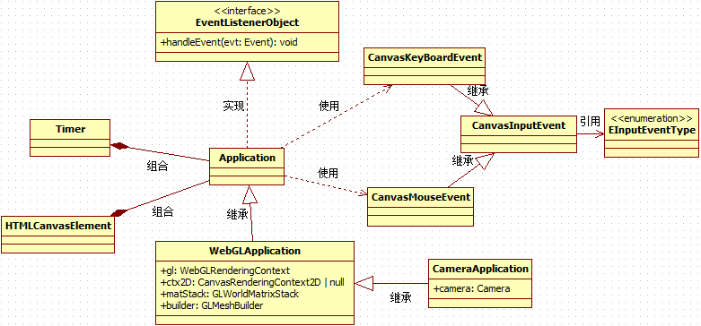

Application体系结构
本章的一开始，提供了WebGLApplication框架系统的作用图以及UML静态类结构图，目的是以图解的方式，快速的、宏观的了解WebGLApplication的框架系统的要点。
然后通过一个不停旋转的立方体Demo，来演示WebGLApplication框架系统的使用流程和要点。你会发现WebGLApplicaiton框架系统使用起来非常方便：
你需要实现一个继承自WebGLApplication或CameraApplication的类。
你需要覆写（override）基类的run虚方法用于预先异步加载渲染用的资源。
如果要按屏幕刷新频率（例如60帧/秒）刷新整个程序的话，请覆写（override）基类的update方法
如果你要按照自定义的频率刷新整个程序的话，请实现定时器Timer的TimeCallback回调函数并自行管理定时器的数量以及生命周期。
你需要覆写（override）基类的render方法，按需实现需要渲染的场景效果。
如果需要处理鼠标或键盘等事件，请覆写（override）基类的onXXX事件处理虚方法。
其他一些操作。
最后，关注了异步资源加载与同步操作相关的内容。由于TS/JS中所有的资源加载都是异步操作，与我们平时接触的同步编程模式有比较大的区别，因此值得我们花点时间了解和掌握这方面的知识点（ES6中的Promise / async / await相关知识点）。
